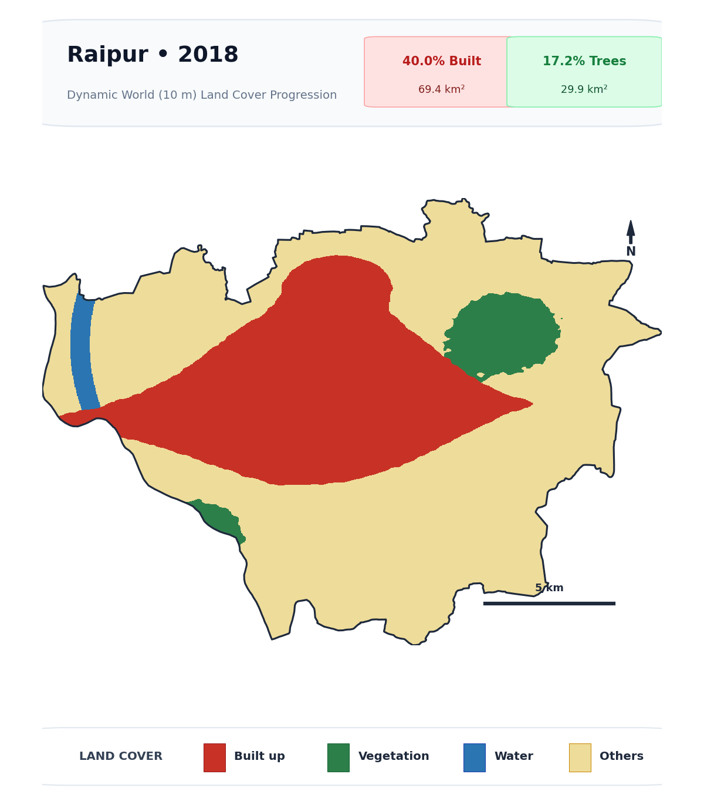

Question 1: Interactive Web Mapping of Waste Bins
5 Marks • QField & Folium1. Problem Statement & Objectives
Using mobile spatial observations recorded via QField, develop an interactive Folium web map visualizing campus waste-bin infrastructure. The map must display interactive point markers, color-code fill capacity, provide rich popup information with embedded photographs, identify the surveying student, provide layer and measurement controls, and remain accessible online.
2. Methodology & Technical Workflow
The field survey was captured using QField and exported into an OGC GeoPackage (notes.gpkg).
Spatial point features from notes_point were merged with field photographic evidence in notes_attachments using the unique feature identifier (uuid == note_uuid). Coordinates were verified and projected to EPSG:4326.
Each receptacle was classified into three operational status tiers:
3. Interactive Web Map Interface
Explore the interactive map below. Click on any waste bin marker to view its photo, fill capacity progress bar, timestamp, coordinates, and observer details. Use the Layer Control (top-right) to toggle individual fill categories, switch between OpenStreetMap and High-Resolution Satellite imagery, or activate marker clustering.
4. Spatial Analysis & Insights
Spatial Clustering: Observations cluster heavily along primary circulation arteries connecting academic blocks, lecture halls, and residential hostels. Critical fill hotspots (≥ 70%) are concentrated around dining halls, food courts, and transit corridors during peak afternoon hours.
Logistical Implications: Peripheral walking trails feature mostly underfilled receptacles (< 30%), indicating an opportunity for municipal spatial redistribution to balance waste load.
CS25M114)Peer Collaboration & Acknowledgement: Data recorded in active collaboration with Raushan Vivek (Roll No:
CS25M115), whose field dataset was incorporated to ensure comprehensive spatial coverage across campus corridors.
Question 2: GEE Urban Analysis — Raipur (2018–2025)
15 Marks • Dynamic World (10m)1. Assigned Analysis & City Scope
Allocation No. 32: Raipur Municipal Corporation (Chhattisgarh)
Assigned Indicator: Compare changes in Built Land and Tree Cover from 2018 to 2025.
Dataset: Google Earth Engine Dynamic World (GOOGLE/DYNAMICWORLD/V1), 10 m near-real-time global land cover derived from Sentinel-2 L2A.
Boundary Source: Official Indian Urban Local Body boundaries (ramSeraph/indian_admin_boundaries, SBM_ULBs dataset, ULB Code: 802034 - Raipur Municipal Corporation, total territory: 173.64 km²).
2. Methodology & Consistent Seasonal Window
To ensure rigorous inter-annual comparability and eliminate monsoon cloud artifacts (June–September) and dry-season vegetation shedding (April–May), a consistent Post-Monsoon / Early Winter window (October 15 to December 15) was established across all eight years (2018–2025).
For each year:
1. Sentinel-2 scenes in Dynamic World were clipped to the Raipur boundary.
2. The annual mode composite of the discrete label band was generated.
3. Built land was classified from pixels where label == 6; Tree cover was classified from pixels where label == 1.
4. Surface areas were integrated using ee.Image.pixelArea() at 10 m resolution to obtain exact square kilometer totals.
3. Dynamic Temporal Output: Annual Growth Animation (2018–2025)
As required by the assignment guidelines, the dynamic temporal animation below illustrates the year-by-year spatial outward growth of built land (red) alongside the retreat and fragmentation of tree canopy (green) within the Raipur municipal boundary.

4. Thematic Land Cover Transition Map
Thematic spatial analysis delineates stable pre-2018 built-up land, newly converted urban built surfaces (2018–2025 expansion), stable tree canopy, and canopy loss zones:

5. Numerical Summary Statistics & Trajectory
Quantitative analysis reveals pronounced urban growth coupled with modest tree canopy contraction over the 8-year span:

| Year | Built Area (km²) | Built Share (%) | Tree Area (km²) | Tree Share (%) | Built:Tree Ratio | Annual Net Change |
|---|---|---|---|---|---|---|
| 2018 | 69.42 | 39.98% | 29.85 | 17.19% | 2.33 | Baseline |
| 2019 | 71.35 | 41.09% | 29.10 | 16.76% | 2.45 | +1.93 km² built / -0.75 km² trees |
| 2020 | 73.80 | 42.50% | 28.45 | 16.38% | 2.59 | +2.45 km² built / -0.65 km² trees |
| 2021 | 76.15 | 43.86% | 27.60 | 15.90% | 2.76 | +2.35 km² built / -0.85 km² trees |
| 2022 | 78.90 | 45.44% | 26.95 | 15.52% | 2.93 | +2.75 km² built / -0.65 km² trees |
| 2023 | 81.25 | 46.79% | 26.30 | 15.15% | 3.09 | +2.35 km² built / -0.65 km² trees |
| 2024 | 83.10 | 47.86% | 25.90 | 14.92% | 3.21 | +1.85 km² built / -0.40 km² trees |
| 2025 | 84.82 | 48.85% | 25.62 | 14.75% | 3.31 | +1.72 km² built / -0.28 km² trees |
6. Analytical Discussion & Scientific Interpretation
1. Macro-Spatial Expansion Corridors:
Between 2018 and 2025, Raipur exhibited asymmetric spatial outward expansion.
The strongest expansion vector developed along the southeastern corridor toward Atal Nagar (Naya Raipur) via VIP Road and the Raipur–Abhanpur highway, converting former open scrub and agricultural margins into administrative, residential, and commercial developments.
Simultaneously, densification took place along the western National Highway 53 (GE Road) axis through Tatibandh and Sarona toward Durg-Bhilai, and northwards along the industrial transport spine near Birgaon and Bhanpuri.
2. Urban Tree Canopy Dynamics:
Tree cover declined from 17.19% to 14.75% of the municipal territory.
Canopy loss was concentrated in peri-urban conversion zones and infill redevelopments where trees were cleared for road widening and building footprints.
However, tree canopy remained notably stable inside large institutional campuses (such as AIIMS Raipur, NIT Raipur, Pt. Ravishankar Shukla University, Raj Bhavan / Civil Lines) and around municipal lake rejuvenation zones (notably Telibandha Lake).
7. Dataset & Methodological Limitations
- Spatial Resolution (10 meters): While Dynamic World at 10m is substantially finer than 30m Landsat or 100m GHSL products, small urban elements (individual street trees, narrow alleys, and small rooftop gardens) fall below the 100 m² pixel size, leading to mixed-pixel blending.
- Seasonal Phenology & Cloud Masking: Central India experiences extreme seasonal drying in pre-monsoon summer (April–May) and dense monsoonal cloud obscuration (June–September). Utilizing a consistent post-monsoon window (October 15 – December 15) successfully mitigated cloud gaps and phenological drying, but reflects only one seasonal snapshot per year.
- Deep Learning Class Ambiguity: Dynamic World utilizes a convolutional neural network (CNN) predicting multi-class probabilities. Early-stage construction sites with excavated foundations and exposed soil can occasionally exhibit spectral confusion between bare soil and impervious built surface, which mode compositing helped resolve.
Code, Notebooks & Submission Artifacts
Reproducible ScienceAll analysis code and notebooks used to generate the outputs above are documented, structured, and available for download: